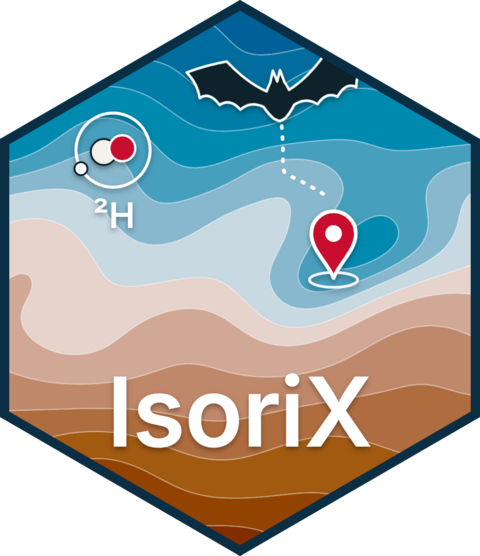
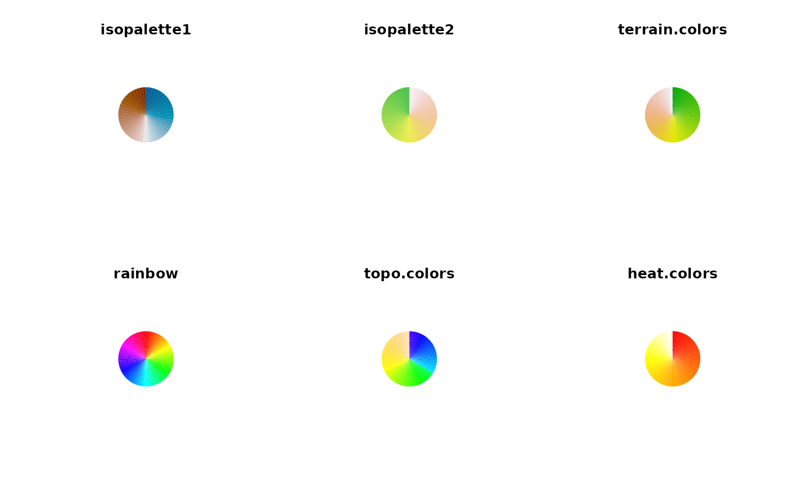
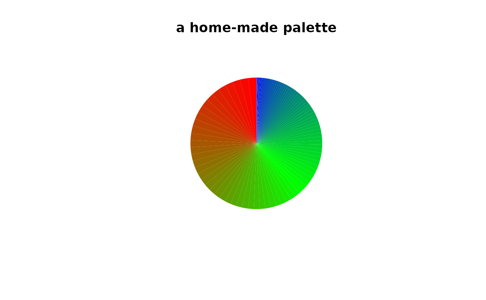
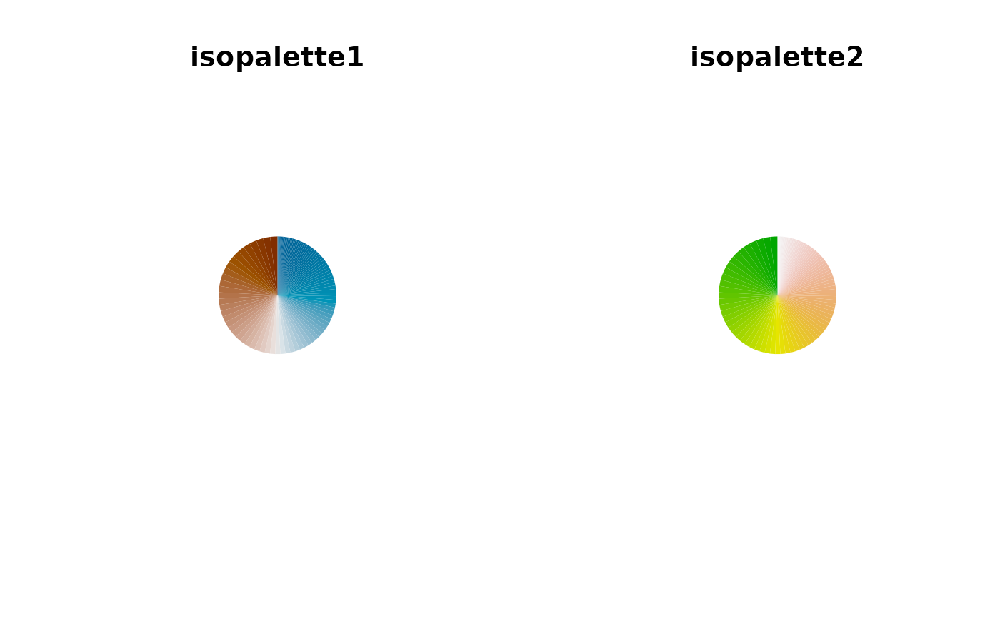

Plotting: colour palettes for isoscapes and assignments
Source:R/IsoriX-datasets.R
isopalette2.RdThese datasets contain colour vectors that can be used for plotting. In our
examples, we use the isopalette1 for plotting the isoscape using
plot.ISOSCAPE and isopalette2 for plotting the
assignment outcome using plot.ISOFIND.
Details
Colour palettes can be created by using the function colorRamp
that interpolates colours between a set of given colours. One can also use
colorRampPalette to create functions providing colours. Also
interesting, the function colorspace::choose_palette offers a GUI
interface allowing to create and save a palette in a hexadecimal format
(which can later on be imported into R). This latter function is however
limited to a maximum of 50 colours. You can also use R colour palettes
already available such as terrain.colors or others available
(see examples below). Alternatively, you can design your own colour palette
by writing standard hexadecimal code of colours into a vector.
Note
We use the package rasterVis for plotting. Instead of using colour palettes directly, one can also use any "Theme" designed for the lattice graphic environment (see source for details).
See also
grDevices::rainbow for information about R colour palettes
grDevices::colorRamp and colorspace::choose_palette to create your
own palettes
Examples
## A comparison of some colour palette
par(mfrow = c(2, 3))
pie(rep(1, length(isopalette1)),
col = isopalette1,
border = NA, labels = NA, clockwise = TRUE, main = "isopalette1"
)
pie(rep(1, length(isopalette2)),
col = isopalette2,
border = NA, labels = NA, clockwise = TRUE, main = "isopalette2"
)
pie(rep(1, 100),
col = terrain.colors(100), border = NA, labels = NA,
clockwise = TRUE, main = "terrain.colors"
)
pie(rep(1, 100),
col = rainbow(100), border = NA, labels = NA,
clockwise = TRUE, main = "rainbow"
)
pie(rep(1, 100),
col = topo.colors(100), border = NA, labels = NA,
clockwise = TRUE, main = "topo.colors"
)
pie(rep(1, 100),
col = heat.colors(100), border = NA, labels = NA,
clockwise = TRUE, main = "heat.colors"
)

## Creating your own colour palette
MyPalette <- colorRampPalette(c("blue", "green", "red"), bias = 0.7)
par(mfrow = c(1, 1))
pie(1:100,
col = MyPalette(100), border = NA, labels = NA,
clockwise = TRUE, main = "a home-made palette"
)

## Turing palettes into functions for use in IsoriX
Isopalette1Fn <- colorRampPalette(isopalette1, bias = 0.5)
Isopalette2Fn <- colorRampPalette(isopalette2, bias = 0.5)
par(mfrow = c(1, 2))
pie(1:100,
col = Isopalette1Fn(100), border = NA, labels = NA,
clockwise = TRUE, main = "isopalette1"
)
pie(1:100,
col = Isopalette2Fn(100), border = NA, labels = NA,
clockwise = TRUE, main = "isopalette2"
)
